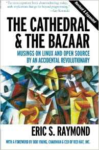

The readings for this week are:
In these essays, ESR discusses the economics of open source:
To many people, the successes of the open-source community seem like an implausible form of magic. High-quality software materializes ``for free'', which is nice while it lasts but hardly seems sustainable in the real world of competition and scarce resources. What's the catch? Is Ceridwen's cauldron just a conjuring trick? And if not, how does ephemeralization work in this context—what spell is the goddess speaking?
For this upcoming week, you are to consider the following questions as you perform the readings and participate in class:
In regards to selling software, ESR argues that there is more value in selling services on top of software than selling software itself:
The foregoing begins to give us some insight into why open-source software increasingly poses not merely a technological but an economic challenge to the prevailing order. The effect of making software `free', it seems, is to force us into that service-fee–dominated world—and to expose what a relatively weak prop the sale value of the secret bits in closed-source software was all along.
What do you make of this idea of "services instead of software" business model?
To summarize the trade-off between open source and proprietary software, ESR remarks:
The closed-source approach allows you to collect rent from your secret bits; on the other hand, it forecloses the possibility of truly independent peer review. The open-source approach sets up conditions for independent peer review, but you don't get rent from your secret bits.
When is it better to "collect rent" and when is it better to have "independent peer review"?
In his final conclusion on "life after the revolution", ESR predicts
Infrastructure (the Internet, the Web, operating systems, and the lower levels of communications software that has to cross boundaries between competing parties) will be almost all open source, cooperatively maintained by user consortia and by for-profit distribution/service outfits with a role like that of Red Hat today.
How does this prediction hold up in today's cloud dominated world and the rise of open core business models?
Is the rise of "open core" a positive or negative development for open source? How should open source projects handle the situations of large service providers taking their source code to power their infrastructure, but contributing little back (at least financially)?
Note, you should not simply list the questions and answer each one directly. Instead, the questions are there to help you brainstorm about the question:
Does open source still make business sense? How can the open source movement be sustained and funded in the future? Is the open source business model broken or does the magic cauldron still have power?